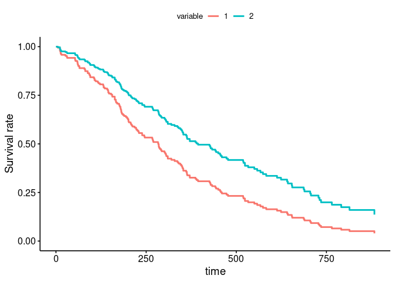

The survivalGPU library allows you to perform survival analyzes using the resources of Graphic Processing Units (GPU) in order to accelerate the speed of calculations. Currently, two models have been implemented :
- Cox Proportional Hazards regression model
- Weighted Cumulative Exposure model
It’s also possible to use the library without having Graphics Processing Units (with CPU).
Installation
survivalGPU is a package based on a package written in python, dependant on the reticulate R package. To use it, it’s necessary to have installed some python libraries such as torch, torch-scatter, and pykeops. To use survivalGPU, you can create a virtual python environment through reticulate. It’s highly recommended to not to use the default python executable.
library(reticulate)
virtualenv_create("survivalGPU")
virtualenv_install("survivalGPU", packages = c("torch"))
virtualenv_install("survivalGPU", packages = c("torch_scatter", "pykeops",
"matplotlib", "beartype",
"jaxtyping"))
# torch takes a long time to set upTo configure properly and understand your python environment, check vignette("python_connect")
survivalGPU require submodules : you can install the development version of survivalGPU from GitHub with install_git_with_submodule():
# install.packages("devtools")
install_git_with_submodule <- function(x, subdir) {
install_dir <- tempfile()
system(paste("git clone --recursive", shQuote(x), shQuote(install_dir)))
# change name for windows install
file.rename(file.path(install_dir, "R/inst/python/survivalgpu"),
file.path(install_dir, "R/inst/python/survivalgpu_submodule"))
file.copy(file.path(install_dir, "python/survivalgpu"),
file.path(install_dir, "R/inst/python"), recursive = TRUE)
devtools::install(file.path(file.path(install_dir, subdir)))
}
install_git_with_submodule("https://github.com/jeanfeydy/survivalGPU",
subdir = "R")Warning: Currently, survivalGPU is not available for Windows.
Example
Let’s make a small example for a Cox PH model with lung cancer dataset from survival package. Before load survivalGPU, use your virtual python environment (see above or vignette("python_connect")).
library(reticulate)
use_virtualenv(virtualenv = "survivalGPU")Check if CUDA is detected :
use_cuda()
#> [KeOps] Warning : cuda was detected, but driver API could not be initialized. Switching to cpu only.
#> [1] FALSEBy default, functions run with GPU if detected. Then we specify the number of bootstrap, and consequently the batchsize argument, according to CUDA drivers detection.
if (use_cuda()) {
n_bootstrap <- 1000
batchsize <- 200
} else {
n_bootstrap <- 50
batchsize <- 10
}You can realize the Cox model with the coxphGPU() function, which is written in the same way as the survival::coxph() function from survival package, with a Surv object in the formula.
coxphGPU_bootstrap <- coxphGPU(Surv(time, status) ~ age + sex + ph.ecog,
data = lung,
bootstrap = n_bootstrap,
batchsize = batchsize,
ties = "breslow")With summary method, you obtain results for initial model, and a confidence interval by normal distribution process. A confidence interval is also estimated for coefficients by bootstrap (if bootstrap > 1 in your coxphGPU object).
summary(coxphGPU_bootstrap)
#> Call:
#> coxphGPU.default(formula = Surv(time, status) ~ age + sex + ph.ecog,
#> data = lung, ties = "breslow", bootstrap = n_bootstrap, batchsize = batchsize)
#>
#> n= 227, number of events= 164
#> (1 observation effacée parce que manquante)
#>
#> coef exp(coef) se(coef) z Pr(>|z|)
#> age 0.011041 1.011102 0.009267 1.191 0.233
#> sex -0.551890 0.575861 0.167742 -3.290 0.001 **
#> ph.ecog 0.462947 1.588749 0.113574 4.076 4.58e-05 ***
#> ---
#> Signif. codes: 0 '***' 0.001 '**' 0.01 '*' 0.05 '.' 0.1 ' ' 1
#>
#> exp(coef) exp(-coef) lower .95 upper .95
#> age 1.0111 0.9890 0.9929 1.030
#> sex 0.5759 1.7365 0.4145 0.800
#> ph.ecog 1.5887 0.6294 1.2717 1.985
#>
#> Concordance= 0.637 (se = 0.025 )
#> Likelihood ratio test= 30.41 on 3 df, p=1e-06
#> Wald test = 29.84 on 3 df, p=1e-06
#> Score (logrank) test = 30.41 on 3 df, p=1e-06
#>
#> ----------------
#> Confidence interval with 50 bootstraps for exp(coef), conf.level = 0.95 :
#> 2.5% 97.5%
#> age 0.991309 1.030620
#> sex 0.397429 0.872966
#> ph.ecog 1.237810 1.927180To visualize your model, you can plot adjusted survival curves with survminer::ggadjustedcurves().
survminer::ggadjustedcurves(coxphGPU_bootstrap,
variable = "sex",
data = lung)
If you have no model, it’s possible to estimate survival curves with Kaplan-Meier estimation by survival::survfit(), and you can use survminer::ggsurvplot() to plot a Kaplan-Meier survival curve.
Moreover, it’s possible to evaluate proportional hazards assumption, and plot a forestplot of your model. All is explain in the vignette("coxPH").